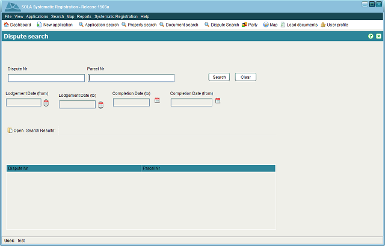

The DisputeSearch screen allows you to find disputes of interest for editing or viewing. It
can be accessed from the Search > Dispute Search menu or selecting Dispute search in the toolbar.
Dispute search in the toolbar.

Document Search
You can search by any combination of Dispute number, Parcel Number, Lodgement date (from-to: date range covering the period when the objection was lodged),Completion Date (from-to: date range covering the period when the objection was completed)
To edit the details of the Dispute select the dispute in the Search results list and click
 Open attachment toolbar button.
Open attachment toolbar button.
You can update the details captured for the disputet as far as it has not been completed.
Also See